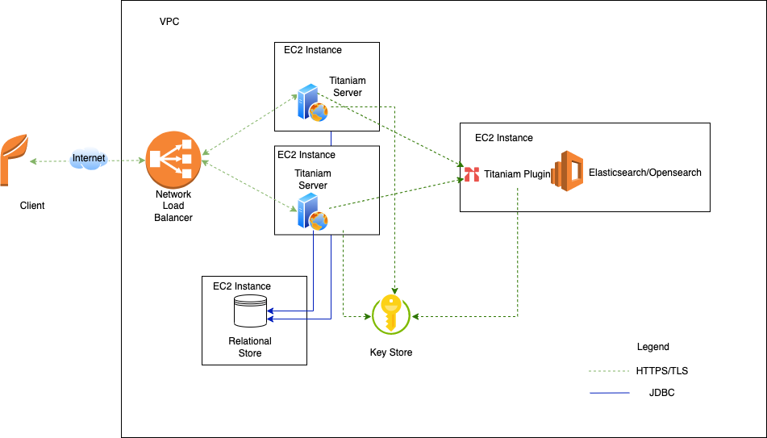
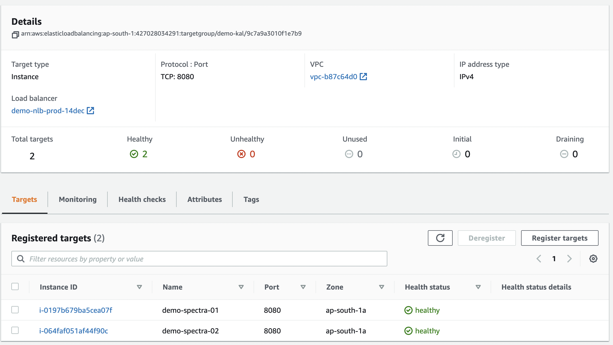

Production Installation Using Docker on EC2 Instances
This section describes how you can deploy Titaniam Server on EC2 instances using docker in the following production layout:
Configuration
This section explains instructions to deploy Titaniam Server in the following configurations:
4 EC2 instances:
An EC2 instance for installing Titaniam Plugin and Kibana
An EC2 instance for installing and hosting PostgreSQL
Two EC2 instances for installing and hosting Titaniam Server configured as Vault.
The Titaniam Server and Kibana are accessible only through a network load balancer.
The Titaniam Server can access the PostgreSQL instance and Titaniam Plugin using their private IP addresses.
Prerequisites
Read this Platform Support Matrix.
Ensure that the each EC2 instance where you run Titaniam Server must have access to the Secrets Manager. Obtain an IAM Role with policy SecretsManagerReadWrite. This role allows the Titaniam Server to read and write to AWS Secrets Manager.
The AWS EC2 instances have access to internet initially to install docker, docker-compose, and Titaniam Server from the docker registry.
Note
After installing the components, ensure that you remove any public IP on the EC2 instances. You must access the EC2 instance only using the load balancer.
Production Installation Instructions
This section explains the overall process to install Titaniam Server in a high-availability production environment. You can supply all the application properties, license, and encryption keys to Titaniam Server through a secret entry in a secrets manager.
Artifacts
Obtain the following installation artifacts from Titaniam support:
License file and SHA Checksum for Titaniam Plugin and Titaniam Server.
Access token to retrieve the Titaniam Server and Plugin images from the private repository in Docker Hub. You need an access token to download the images. Contact Titaniam support to get your access token.
Installation Process
Following is the process to install Titaniam Server, Plugin, and PostgreSQL.
Store the following as secrets in the AWS Secrets Manager:
License
Titaniam Server application properties
Encryption keys
Or
Store the license, application properties, and encryption keys in the local file system.
Install Titaniam plugin and Kibana on an EC2 instance.
Install PostgreSQL on an EC2 instance.
Install Titaniam Server on an EC2 instance.
Configure as Vault.
Integrate with the PostgreSQL datastore.
Configure load balancer.
Step 1: Supplying Configuration Values and Keys using AWS Secrets Manager
Titaniam supports supplying all the application properties, licenses, and encryption keys through a secret entry in AWS Secrets Manager. The advantage of doing this is that you can maintain the configuration settings centrally instead of storing the settings in each server node.
Use this procedure (supplying_secrets) here to create the following new secrets:
Titaniam License (see Step 1.a: Content of titaniam.license secret)
Data Encryption keys (see Step 1.b: Store Encryption Keys)
Configuration properties (see Step 1.c: Create Configuration Settings)
Related Topics
Next Step: Step 2: Configure Services
Step 1.a: Content of titaniam.license secret
The following content can be copied and pasted as a secret named titaniam.license in the PlainText view.
The secret name can be of the following formats:
<prefix>titaniam.license.<prefix>is the value of the propertytitaniam.secrets.prefixfrom thedocker-compose.ymlfile.titaniam.licenseif you have not specified the propertytitaniam.secrets.prefix.
The values provided here are just examples. Edit it to reflect the license file and SHA that you received from Titaniam Support before you save the secret. Occasionally the license file may include an expiry date. You can leave that in place. It does not affect the behavior.
{
"digest": "P9r7miQDNOf/0HWg8WQjBotJ79PP6WTw+0BQ9VT/fXQ=",
"license":"vwOraInV23PJ2ePSqHmsnULtSfi98AYO2NHJDCv3f39INv4c9xIGiry3fyW19iZ3nOpIb3QI2akOSg0I6/CZvweoozFtZnP3xqWWXL6t4hhCBNuCdpWGh3XCAVN2xXb5u8S55GjTeWs3IZz5JnHOTSPUCBunicy2TSPNmo/4ScNM7fQagyrqxsiQphq9hnU8vmngQ4E3udqIh086S++2ERk+nki/TDpMWpOxCVcf3ZdnVo+Ra+Tw01MIOxeM3PuRzFMAVJNyGb7BumDfmN6wOlnzpXoVKkDSfQwD1pwkpJcMpKcX8uJMmPo0fJ022w3j0bjMsHy/buMeUybRSdjYUzrIrNosrjDJtoCgel8ygOrscUf9HnJFIziRSd2wCzNpyZyJFUKWhV7LHATPigmeXoHHqWlND0f5YECdvlqLdZXnZllYxuv/xOAIPKzjSyN+GeESmoQavFTNL14XGSKw6Xz825iBdyRJkGW/JsYClBemBRQelgkoxerBTyq80CcSmaie5UdblYuMwTXr13sySWJbX7VdKMKoReRGun+vphHBQnTDPIagb1AiYnsOjSMYdK03SZvGjuujzwRwgn23m9pBJL3iaGTP+1cTrqN/b6FijTsAzxU55Ny3YbQ54f4zM7g0lk0wZepPtPpTG3hx6D83StcNaXRxRx5u3YB5ET8="
}
Related Topics
supplying_secrets
Step 1.b: Store Encryption Keys
You have two options of using the data encryption keys.
Option 1, Storing Encrypted Data Keys: Includes a master key (also called as Key Encryption Key, KEK) and one or more data encryption keys. The data encryption keys are encoded using the master key before adding them to the AWS Secrets Manager. You can select one of the data encryption keys as an active key.
Generate an encrypted data encryption key and optionally a master key. If you have an existing master key, you can choose not to generate the master key. See Generate an Encrypted Data Encryption Key and Optionally a Master Key.
Store the master key as
<prefix>titaniam_key_ring/<department>/titaniam_key_encryption_keyortitaniam_key_ring/<department>/titaniam_key_encryption_key. This key is the master encryption key.Store the encrypted data key as a secret:
<prefix>titaniam_key_ring/<keyring_name>/<INDEX_NAME>ortitaniam_key_ring/<keyring_name>/<INDEX_NAME>.Titaniam Server uses only keys that have the
Activetag.
Option 2, Storing Plain Data Keys: Generate a data encryption key and store it as a Secret in the AWS Secrets Manager. You are not encrypting the data encryption key with a master key in this case. See Generate Keys.
Note
<prefix>is the string from the propertytitaniam.secrets.prefixin thedocker-compose.ymlfile. If you have not mentioned thetitaniam.secrets.prefixproperty, the secret name must be of the formattitaniam_key_ring/<keyring_name>/<INDEX_NAME>for data encryption key andtitaniam_key_ring/<department>/titaniam_key_encryption_keyfor master encryption key.titaniam_key_ringmust be entered as is. This is the namespace that Titaniam server looks for when loading the encryption keys.<keyring_name>is the name of the keyring. This name distinguishes different Titaniam installations. Decide a name for the Titaniam Server installation (for example production_finance, dev_sandbox).
Related Topics
supplying_secrets
Step 1.c: Create Configuration Settings
Populate the rest of the configuration settings in a secret.
Create a new secret called
titaniam.properties.Copy and paste the titaniam.properties Secret to the secret using PlainText view.
Edit the entries to reflect your installation reality. Pay attention to these specifically:
Save the secret.
Related Topics
supplying_secrets
Step 1: Supplying Configuration Values and Keys using Local File System
Titaniam supports supplying all the application properties, licenses, and encryption keys through using the local file system.
Storing Titaniam License on Local File System
Store the license with the value provided by Titaniam on your virtual machine, for example, /home/centos/titaniam_config/license.
Example Titaniam License
The values provided here are just examples. Edit it to reflect the license file and SHA that you received from Titaniam Support. Occasionally the license file may include an expiry date. You can leave that in place. It does not affect the behavior.
{
"digest": "P9r7miQDNOf/0HWg8WQjBotJ79PP6WTw+0BQ9VT/fXQ=",
"license":"vwOraInV23PJ2ePSqHmsnULtSfi98AYO2NHJDCv3f39INv4c9xIGiry3fyW19iZ3nOpIb3QI2akOSg0I6/CZvweoozFtZnP3xqWWXL6t4hhCBNuCdpWGh3XCAVN2xXb5u8S55GjTeWs3IZz5JnHOTSPUCBunicy2TSPNmo/4ScNM7fQagyrqxsiQphq9hnU8vmngQ4E3udqIh086S++2ERk+nki/TDpMWpOxCVcf3ZdnVo+Ra+Tw01MIOxeM3PuRzFMAVJNyGb7BumDfmN6wOlnzpXoVKkDSfQwD1pwkpJcMpKcX8uJMmPo0fJ022w3j0bjMsHy/buMeUybRSdjYUzrIrNosrjDJtoCgel8ygOrscUf9HnJFIziRSd2wCzNpyZyJFUKWhV7LHATPigmeXoHHqWlND0f5YECdvlqLdZXnZllYxuv/xOAIPKzjSyN+GeESmoQavFTNL14XGSKw6Xz825iBdyRJkGW/JsYClBemBRQelgkoxerBTyq80CcSmaie5UdblYuMwTXr13sySWJbX7VdKMKoReRGun+vphHBQnTDPIagb1AiYnsOjSMYdK03SZvGjuujzwRwgn23m9pBJL3iaGTP+1cTrqN/b6FijTsAzxU55Ny3YbQ54f4zM7g0lk0wZepPtPpTG3hx6D83StcNaXRxRx5u3YB5ET8="
}
Storing Application Properties and Service Definitions
Create a titaniam.properties file with the following values and store it at a location on your EC2 instance.
management.endpoint.health.show-details=always
sdss.es.tiny_keyword.disabled=true
sdss.async.task.pool.core-size=1
sdss.async.task.pool.max-size=5
sdss.async.task.pool.keep-alive=120
sdss.async.task.pool.queue-capacity=1000
sdss.async.task.thread-name-prefix=sdss-async-
sdss.store.elapsed.millis=true
spring.servlet.multipart.max-file-size=5MB
spring.servlet.multipart.max-request-size=5MB
Storing Encryption Keys in Local File System
Storing Encrypted Data Keys: Includes a master key (also called as Key Encryption Key, KEK) and one or more data encryption keys. The data encryption keys are encoded using the master key before adding them to the keyring.json file. You can select one of the data encryption keys as an active key.
Storing encryption keys involves the following steps:
Generate a master key and an encrypted data encryption key. See Generate an Encrypted Data Encryption Key and Optionally a Master Key.
Create a Keyring.JSON file and update the
keyring.jsonfile with the output of the previous step.Store the
keyring.JSONfile on your EC2 instance.Update the
docker-compose.ymlfile to mount thekeyring.JSONfile as a volume.
Step 2: Installing Titaniam Plugin and Kibana
This section explains the overall process to install and configure Titaniam Plugin and Kibana on an EC2 instance.
Install Titaniam Plugin
Bring up an EC2 instance with the configuration as described here.
Login to the EC2 instance using ssh.
Install docker and docker-compose on the EC2 instance. See Install Docker and Docker Compose.
Create the following folders (
/var/lib/arcusdataand/var/lib/kibanadata) on your EC2 instance:sudo mkdir /var/lib/arcusdata sudo mkdir /var/lib/kibanadata
Ensure that your EC2 user has ownership and write access to these folders. Do the following:
sudo chown -R 1000:1000 /var/lib/arcusdata sudo chown -R 1000:1000 /var/lib/kibanadata
(If using AWS Secrets Manager) Copy this docker-compose.yml file, and modify the following properties.
- aws_region=<region> - titaniam.keyring.name=<keyring-name> - titaniam.store.type=aws - titaniam.aws.access.id=<AWS_ACCESS_ID> - titaniam.aws.secret.id=<AWS_SECRET_ID> - titaniam.secrets.prefix=prefix - node.name=arcus01 - http.port=9200
Where,
aws_regionspecifies the AWS Secrets Manager region.titaniam.keyring.namespecifies the keyringname.titaniam.store.typespecifies where the data encryption keys are stored.titaniam.aws.access.idspecifies the encrypted access key required by Titaniam Server to access the Secrets Manager. Ensure that you specify the encrypted value. You can encrypt your client ID using the zero-day encryption (see Zero-day Encryption Service).titaniam.aws.secret.idspecifies the encrypted secret key required by Titaniam Server to access the Secrets Manager. Ensure that you specify the encrypted value. You can encrypt your client ID using the zero-day encryption (see Zero-day Encryption Service).nodespecifies the node on which Titaniam plugin is accessible. Do not modify this.http.portspecifies the port on which you can access the Titaniam plugin endpoints. Best practice is to leave 9200 as is. If you modify this port, ensure that you open this port for inbound traffic.titaniam.secrets.prefixspecifies the prefix path to secrets in AWS Secrets Manager. For example if you have specifytitaniam.secrets.prefix=prefix1, you must store the titaniam.license in AWS Secrets as<prefix1>titaniam.licence. Encryptions keys as<prefix1>titaniam_key_ring/<keyring_name>/<INDEX_NAME>.
Note
The
docker-compose.ymlfile also includes properties for installing Kibaba. You need not change any of the Kibana properties. Use the properties as specified in the example file.(If using a local file system for license and keys) Copy this docker-compose.yml file, and modify the following properties.
- titaniam.store.type=file Volumes: - <location of titaniam licence>:/usr/local/titaniam/license - <location of keyring.json>:/usr/local/titaniam/keyring.json
Login to the docker registry:
docker login
At the password prompt, enter the username and personal access token you received.
Bring up the Titaniam Plugin service with the respective
docker-compose.yml, run the following command with the Titaniam plugin service:docker-compose up -d
To troubleshoot the bring up, open a separate ssh connection to the EC2 instance, and run the following command:
tail -f /var/log/granger/server.log
Create a security group for this instance and create inbound rules to allow traffic on the ports that you have assigned for Titaniam Plugin (9200) and Kibana (5601). For more information, see this document.
In your browser, send the following request:
Request
http://ipaddress:9200
Response
{ "name" : "arcus01", "cluster_name" : "elasticsearch", "cluster_uuid" : "iN75tpULSFSEGaWCT42ajg", "version" : { "number" : "7.10.2", "build_flavor" : "oss", "build_type" : "docker", "build_hash" : "747e1cc71def077253878a59143c1f785afa92b9", "build_date" : "2021-01-13T00:42:12.435326Z", "build_snapshot" : false, "lucene_version" : "8.7.0", "minimum_wire_compatibility_version" : "6.8.0", "minimum_index_compatibility_version" : "6.0.0-beta1" }, "tagline" : "You Know, for Search" }
From your EC2 instance settings, note the private IP address of the EC2 instance and port number on which the Titaniam plugin service is available. You will need this information when configuring Titaniam Server as a Vault.
Remove any public IP on the EC2 instances. You must access the EC2 instance only using the load balancer. See configuring a load balancer.
Step 3: Installing PostgreSQL on an EC2 Instance
This section explains the overall process to install and configure PostgreSQL on an EC2 instance.
Install PostgreSQL
Bring up an EC2 instance with the configuration as described here.
Login to the EC2 instance using
ssh.Install docker and docker-compose on the EC2 instance. See Install Docker and Docker Compose.
Create the following folders (
/var/lib/postgresql/13/main) on your EC2 instance:sudo mkdir /var/lib/postgresql/13/main
Ensure that your EC2 user has ownership and write access to these folders. Do the following:
sudo chown -R 1000:1000 /var/lib/postgresql/13/main
Copy this docker-compose.yml file, and modify the following properties.
POSTGRES_USER: <username> POSTGRES_PASSWORD: <password> POSTGRES_DB: <database_name> PGDATA: /var/lib/postgresql/13/main ports: - "5432:5432"
Where,
POSTGRES_USERspecifies the database user.POSTGRES_PASSWORDspecifies the database password corresponding to the user.POSTGRES_DBspecifies database name to create.portsspecifies the port on which the PostgreSQL service is available.
Store the information from the previous step as you will need it to configure Titaniam Server as a Vault.
Login to the docker registry:
docker login
At the password prompt, enter the username and personal access token you received.
Bring up the PostgreSQL with the respective
docker-compose.yml, run the following command with the Titaniam Server service:docker-compose up -d
Create a security group for this instance and create inbound rules to allow traffic on the ports that you have assigned for PostgreSQL (5432). For more information, see this document.
From your EC2 instance settings, note the private IP address of the EC2 instance and port number on which the PostgreSQL service is available. You will need this information when configuring Titaniam Server as a Vault.
Remove any public IP on the EC2 instances. You must access the EC2 instance only using the load balancer. See configuring a load balancer.
Step 4: Installing Titaniam Server and Configuring as a Vault
This section explains the overall process to install and configure Titaniam Server as a Vault on an EC2 instance.
You must follow the procedure in this section on two EC2 instances.
Install Titaniam Server
Following is the process to install Titaniam Server.
Bring up an EC2 instance with the configuration as described here.
Login to the EC2 instance using ssh.
Install docker and docker-compose on the EC2 instance. See Install Docker and Docker Compose.
(If using AWS Secrets Manager) Copy this docker-compose.yml file, and modify the following properties.
- panther.enabled=false - sdv.enabled=true - ripple.enabled=false - sdss.properties-source=aws.sm - sdss.secretsmanager.properties.keyname=titaniam.properties - sdss.aws.sm.region=us-east-2 - sdss.aws.sm.keyring-name=<keyring-name> - sdss.seed.store.type=aws - sdss.aws.sm.access-key=<AWS_ACCESS_ID> - sdss.aws.sm.secret-key=<AWS_SECRET_ID> - spring.elasticsearch.rest.uris=<Titaniam_plugin_url> - titaniam.secrets.prefix=prefix
Where,
panther.enabledmust be set tofalse.sdv.enabledSet this totrue.ripple.enabledmust be set tofalse.sdss.properties-sourceindicates that the configuration properties are stored in the AWS Secrets Manager.sdss.secretsmanager.properties.keynamespecifies the key name of the configuration properties file. This must be set totitaniam.properties.sdss.aws.sm.regionindicates the region of the AWS machines.sdss.aws.sm.keyring-nameindicates the <keyring_name> from the Secrets Manager. Secret name is of the format - titaniam_key_ring/<keyring_name>/<key_name>.sdss.seed.store.typespecifies that the keystore is in AWS.sdss.aws.sm.access-keyspecifies the encrypted access key required by Titaniam Server to access the Secrets Manager. Ensure that you specify the encrypted value. You can encrypt your client ID using the zero-day encryption (see Zero-day Encryption Service).sdss.aws.sm.secret-keyspecifies the encrypted secret key required by Titaniam Server to access the Secrets Manager. Ensure that you specify the encrypted value. You can encrypt your client ID using the zero-day encryption (see Zero-day Encryption Service).spring.elasticsearch.rest.uristhis property must match the IP and port of the Titaniam Plugin EC2 instance. For example,http://<plugin_private_ip_address>:9200titaniam.secrets.prefixspecifies the prefix path to secrets in AWS Secrets Manager. For example if you have specifytitaniam.secrets.prefix=prefix1, you must store the titaniam.license in AWS Secrets as<prefix1>titaniam.licence. Encryptions keys as<prefix1>titaniam_key_ring/<keyring_name>/<INDEX_NAME>.
(If using a local file system for license and keys) Copy this docker-compose.yml file, and modify the following properties.
- panther.enabled=false - sdv.enabled=true - ripple.enabled=false - spring.elasticsearch.rest.uris=<Titaniam_plugin_url> - sdss.seed.store.type=file Volumes: - <location of titaniam licence>:/usr/local/titaniam/license - <location of keyring.json>:/usr/local/titaniam/keyring.json - <location of titaniam.properties>:/usr/local/titaniam/application.properties
Login to the docker registry:
docker login
At the password prompt, enter the username and personal access token you received.
Bring up the Titaniam Plugin service with the respective
docker-compose.yml, run the following command with the Titaniam Server service:docker-compose up -d
To troubleshoot the bring up, open a separate ssh connection to the EC2 instance, and run the following command:
tail -f /var/log/granger/server.log
Create a security group for this instance and create inbound rules to allow traffic on the ports that you have assigned for Titaniam Server (8080). For more information, see this document.
Send the curl command from the terminal in the EC2 instance:
Request
curl -X POST -H "Content-Type: application/json" -d '{ "data_type":"keyword", "field_name":"title", "value":"abcd", "include_protected_field":"true" }' "http:localhost.com:8080/v2/secure/store"
Response
{"code":"SUCCESS","message":"success","result":{"key_id":"k:e5d9a41a-5f29-414b-998b-11c5159124fd","es_millis":0,"guid":"tn:a1664f0d-6111-4415-bbcd-b54c65cf58c5","protected_field":"03sGZ06alY{_Y06'%7>Pl06Qu-fE^","value":"abcd","db_millis":0,"db_lookup_millis":9}}
Remove any public IP on the EC2 instances. You must access the EC2 instance only using the load balancer. See configuring a load balancer.
Step 5: Integrating with the Data Store
Titaniam Server uses a datastore to store the metadata and schema versions. After you install the Titaniam Server, you must ensure that the Titaniam Server can communicate with the data store.
Open the
titaniam.propertiesfile and edit the sections corresponding to the database you are using.(If using MySQL) Specify the following properties:
"spring.datasource.url": "jdbc:mysql:<database_URL>", "spring.datasource.username": "<username>", "spring.datasource.password": "<password>", "spring.datasource.driver-class-name": "com.mysql.cj.jdbc.Driver", "spring.jpa.properties.hibernate.format_sql": "true", "spring.jpa.properties.hibernate.dialect": "org.hibernate.dialect.MySQL57InnoDBDialect", "spring.datasource.hikari.minimumIdle": "5, "spring.jpa.hibernate.ddl-auto": "update"
(If using MariaDB) Specify the following properties:
"spring.datasource.url": "jdbc:mariadb:<database_URL>", "spring.datasource.username": "<username>", "spring.datasource.password": "<password>", "spring.datasource.driver-class-name": "org.mariadb.jdbc.Driver", "spring.jpa.properties.hibernate.format_sql": "true", "spring.jpa.properties.hibernate.dialect": "org.hibernate.dialect.MariaDB53Dialect", "spring.datasource.hikari.minimumIdle": "5, "spring.jpa.hibernate.ddl-auto": "update"
(If using PostgreSQL) Specify the following properties:
"spring.datasource.url": "jdbc:postgresql<database_URL>", "spring.datasource.username": "<username>", "spring.datasource.password": "<password>", "spring.datasource.driver-class-name": "org.postgresql.Driver", "spring.jpa.properties.hibernate.format_sql": "true", "spring.jpa.properties.hibernate.dialect": "org.hibernate.dialect.PostgreSQL10Dialect", "spring.datasource.hikari.minimumIdle": "5, "spring.jpa.hibernate.ddl-auto": "update"
Where,
<database_URL> is the URL (including the port) where you can access the database. For example:
(PostgresSQL)#spring.datasource.url=jdbc:postgresql://postgres_private_ip_address:5432/<database_name>?autoReconnect=true&useSSL=false&allowPublicKeyRetrieval=true (MySQL) #spring.datasource.url=jdbc:mysql://localhost:3306/testdb (MariaDB) #spring.datasource.url=jdbc:mariadb://localhost:3306/testdb
<username> is the username (POSTGRES_USER) for accessing the database.
<password> is the password (POSTGRES_PASSWORD) required to access the database.
<database_name> is the PostgreSQL database name (POSTGRES_DB).
spring.jpa.properties.hibernate.dialect=Ensure that you select the correct dialect depending on your database version. See the respective database documentation for this information.
Step 6: Configure Load Balancer
This section explains how you can create a network load balancer and route traffic to the Titaniam Servers. Configuring a Load Balancer involves the following steps:
Create a target group.
Create a load balancer and associate it with a target group.
Note
You must create separate target group for the Kibana EC2 instance and separate target group for Titaniam Server EC2 instances.
Create a Target Group for Titaniam Server
Log into your AWS account.
Navigate to the EC2 dashboard.
Click Load Balancing > Target Groups > Create target group.
Select the following:
Basic Configuration > Choose a target type: Instances
Basic Configuration > Target group name: <provide a target group name>
Basic Configuration > Protocol: TCP
Basic Configuration > Port: 8080
Basic Configuration > VPC: <VPC name where your EC2 instances are deployed>
Health Checks > Health check protocol: TCP
Click Next.
The list of Available instances appears.
Select the EC2 instances of your Titaniam Servers from the Available Instances list.
Set the Port for the selected instances as 8080.
Click Include as pending below.
Review your targets.
Click Create target group.
After your Target group is created, ensure that the health checks are okay for both the instances.

Create a Target Group for Kibana
Use the same procedure as described above for creating a target for Kibana. Use the following values:
Select the following:
Basic Configuration > Choose a target type: Instances
Basic Configuration > Target group name: <provide a target group name>
Basic Configuration > Protocol: TCP
Basic Configuration > Port: 5601
Basic Configuration > VPC: <VPC name where your EC2 instances are deployed>
Health Checks > Health check protocol: TCP
Select the Titaniam Plugin EC2 instance from the Available Instances list.
Create Load Balancer
Log into your AWS account.
Navigate to the EC2 dashboard.
Click Load Balancing > Load Balancers > Create Load Balancer.
Click Create in the Network Load Balancer card.
Provide a name for the load balancer.
Ensure the Scheme value is set to Internet-facing and IP address type is set to IPV4
Select the VPC where your EC2 instances are located.
Select the availability zones of the EC2 instances on which Titaniam Servers are installed.
Add listener for Titaniam Server
Set the Protocol as TCP and Port as 8080 in the Listener and routing menu.
Select the target group for Titaniam Server you previously created in the Defaul action > Forward to dialog.
Add listener for Kibana
Set the Protocol as TCP and Port as 5601 in the Listener and routing menu.
Select the target group for Kibana you previously created in the Defaul action > Forward to dialog.
Add listener for Kibana
Set the Protocol as TCP and Port as 5601 in the Listener and routing menu.
Select the target group for Titaniam Plugin you previously created in the Defaul action > Forward to dialog.
Click Create Load Balancer to finish the process.
The load balancer is now created.
Select your load balancer from the EC2 dashboard > Load Balancer page.
Copy the DNS Name from the your load balancer > Description > Basic Configuration settings pane.
On your local computer, run the following curl command to test access to Titaniam Server:
curl -X POST -H "Content-Type: application/json" -d '{ "data_type":"keyword", "field_name":"title", "value":"abcd", "include_protected_field":"true" }' "http://<load_balancer_dns>:8080/v2/secure/store"
You must see a response similar to the following:
{"code":"SUCCESS","message":"success","result":{"key_id":"k:e5d9a41a-5f29-414b-998b-11c5159124fd","es_millis":0,"guid":"tn:a1664f0d-6111-4415-bbcd-b54c65cf58c5","protected_field":"03sGZ06alY{_Y06'%7>Pl06Qu-fE^","value":"abcd","db_millis":0,"db_lookup_millis":13}}
This message means that the Titaniam Server configured as a Vault is working and is accessible through the load balancer.
On your local computer, run the following request in your browser
Request
http://<load_balancer_dns>:5601
Response
The Kibana interface must launch in the browser.
This message means that the Titaniam Plugin is accessible through the load balancer.